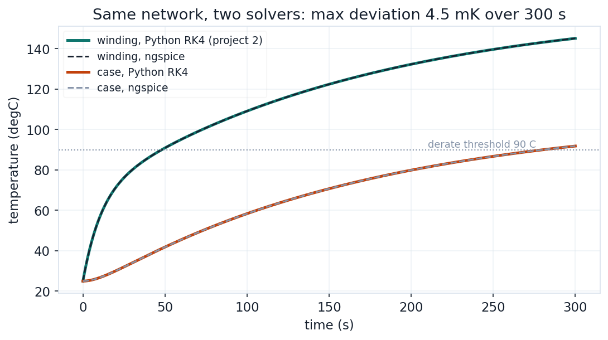
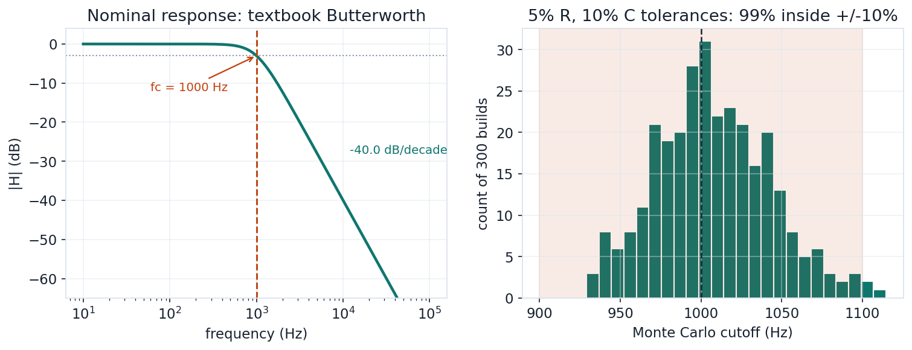
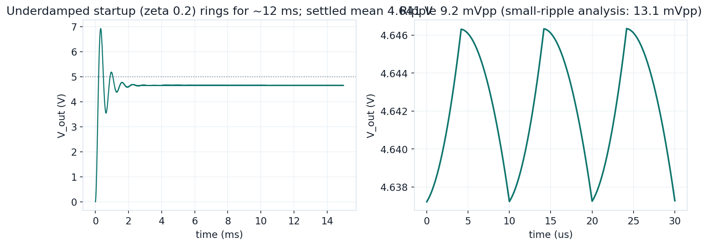

99.3%
MC YIELD, 300 BUILDS
Circuit simulation with the same discipline as the research: every lab pairs the simulator against an independent reference, an analytic result, another solver, or a design equation, and reports the gap.
The electro-thermal analogy makes project 2's two-node motor network a two-RC circuit: temperature is voltage, heat flow is current, ngspice is the thermal solver. Two cross-checks anchor it. On a 300-second open-loop transient, SPICE and the project's RK4 integrator agree to 4.5 millikelvin on the winding and 0.05 on the case. And a DC sweep of dissipated power recovers the continuous torque rating at 2.765 N m, matching the closed-form value to the last digit.

transient max |SPICE - RK4|: winding 4.53 mK, case 0.05 mK; continuous rating 2.765 N m from the DC sweep vs 2.765 closed form (0.000%)
A unity-gain Sallen-Key Butterworth low-pass designed for 1 kHz: the nominal AC sweep lands the cutoff at 1000.3 Hz against a 1000.4 Hz design value with a clean minus 40 dB per decade rolloff. Then the engineering question: with 5% resistors and 10% capacitors, 300 Monte Carlo builds put 99.3% of units inside a plus or minus 10% cutoff window, with a 35 Hz standard deviation.

nominal fc 1000.3 Hz (design 1000.4), rolloff -40.0 dB/dec, MC yield 99.3% inside +/-10%, sigma 35 Hz
A 12-to-5 V buck at 100 kHz. The first run of this lab reported 110 mV of 'ripple' that disagreed with the small-ripple analysis by 30 times, and the waveform showed why: the output LC is underdamped and its startup transient rings for about 12 milliseconds, four times longer than the original measurement window. The corrected lab runs 25 ms, adds realistic capacitor ESR, and lands: inductor ripple within 1% of the volt-second prediction, output ripple 9.2 mVpp against a 13.1 mVpp in-phase upper bound whose quadrature estimate sits at 10. The wrong first cut stays documented in the script.

settled mean 4.641 V (async diode drop), ripple 9.17 mVpp vs 13.12 two-term bound, inductor ripple 0.306 A vs 0.309 predicted